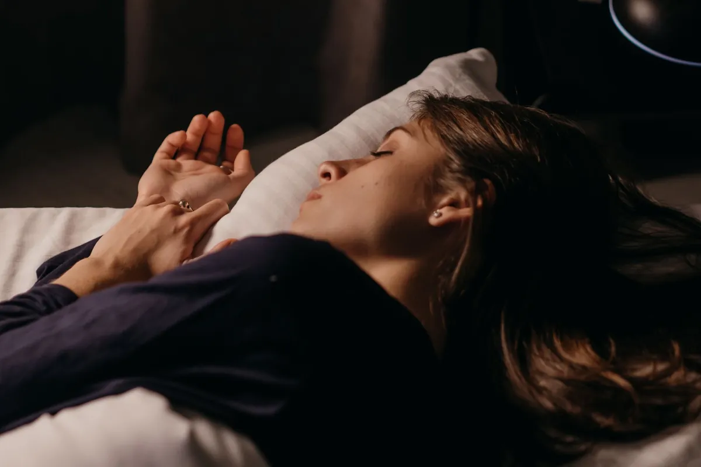
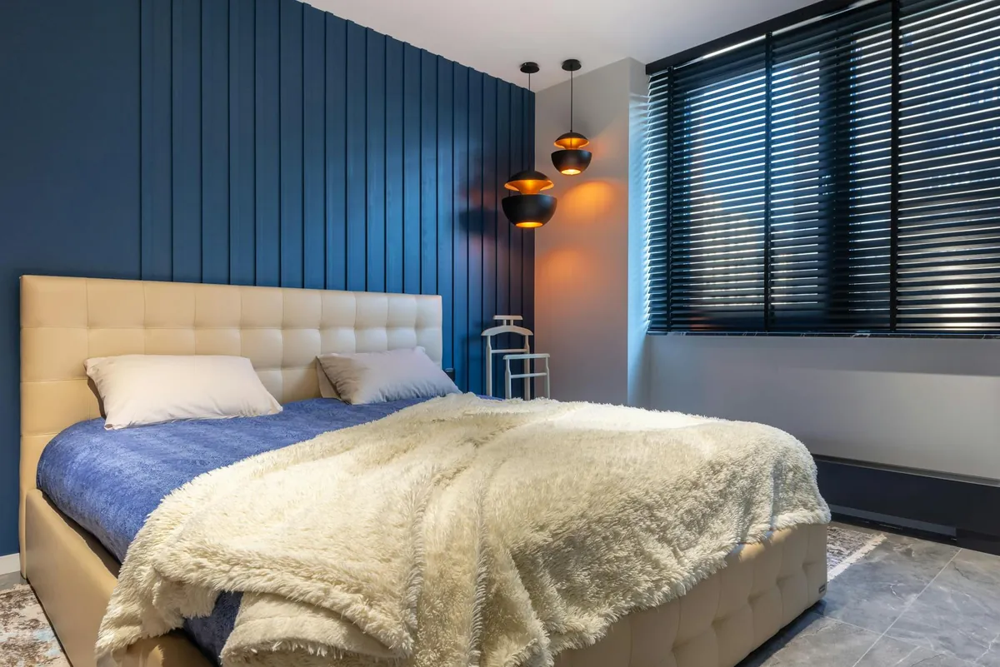

Unlock Your Best Sleep: Daily Habits for More Energy & Focus

Key takeaways
- I used to think I was just one of those people who *didn't* need much sleep.
- I’d brag about surviving on five hours, fueled by copious amounts of coffee.
- Track what feels sustainable and adjust gradually.
I used to think I was just one of those people who *didn't* need much sleep. I’d brag about surviving on five hours, fueled by copious amounts of coffee. Then came the brain fog, the irritability, and the constant feeling of being run down. My focus was shot, and my energy levels were on a rollercoaster. It wasn't until I started prioritizing sleep that I realized what a huge mistake I'd been making. It’s not about willpower; it’s about smart, consistent habits. Let's dive into how you can unlock your best sleep, leading to more energy and focus.
Getting quality sleep is the foundation for everything else. It’s when your body and brain repair themselves, consolidate memories, and regulate hormones. When you shortchange sleep, you’re essentially running your car on fumes. I learned this the hard way, but you don't have to. The goal isn't perfection, but progress. We’re aiming for sustainable, daily habits that make a real difference in how you feel and perform.
One of the biggest game-changers for me was establishing a consistent wind-down routine. This isn't just about brushing your teeth; it's about signaling to your body that it's time to relax. I started by dimming the lights an hour before bed and putting away my phone. Instead, I’d read a physical book or listen to a calming podcast. This simple shift helped quiet my racing mind, making it easier to fall asleep faster and stay asleep longer. It’s a crucial part of unlocking your best sleep.
Another habit that significantly boosted my sleep quality is managing my light exposure. Our bodies are naturally wired to our circadian rhythm, which is heavily influenced by light. Getting bright light exposure, especially sunlight, first thing in the morning helps set your internal clock. On the flip side, minimizing exposure to blue light from screens in the hours before bed is vital. I invested in blue-light blocking glasses for evening use, and the difference was noticeable. This is a key element for anyone looking to improve their sleep and consequently, their daily energy and focus.
What you eat and drink also plays a big role. I used to have a late-afternoon cup of coffee, thinking it wouldn't affect my sleep. I was wrong. Caffeine can linger in your system for hours. I shifted to decaf or herbal tea after 2 PM. Also, a heavy meal right before bed can lead to indigestion and discomfort, disrupting sleep. Aim to finish eating at least two to three hours before you plan to sleep. These dietary adjustments are simpler than you think and contribute to unlocking your best sleep.
Movement is another powerful tool. Regular physical activity can improve sleep quality, but timing matters. Intense workouts too close to bedtime can be stimulating for some. I found that a moderate workout in the afternoon worked best for me. Even a brisk walk can make a difference. If you’re looking for ways to incorporate more movement, check out this related healthy tip. Finding an activity you enjoy is key to making it a sustainable habit.
The 2-Minute Win
Right now, take a moment to assess your bedroom environment. Is it dark, quiet, and cool? Turn off any unnecessary lights, close blinds, and consider a fan for white noise or a cooler temperature. These small adjustments can make a big immediate impact on your sleep quality.
Managing stress is also paramount. My mind used to race with to-do lists and worries as soon as my head hit the pillow. I started a nightly journaling practice to get those thoughts out of my head and onto paper. This simple act of 'brain dumping' before bed significantly reduced my sleep onset latency. If you’re looking for more ways to manage stress, this another practical guide might help.
Pro-Tip: Consider adding a magnesium supplement before bed. Magnesium plays a role in relaxation and sleep regulation. I found a form called magnesium glycinate particularly helpful for its calming effects without the digestive upset some other forms can cause. It's a small addition that can yield significant results for unlocking your best sleep.
Creating a dedicated sleep space is also crucial. Your bedroom should be a sanctuary for rest, not a multi-purpose room for work or entertainment. I made sure my bed was only for sleeping and intimacy. This helps your brain associate your bedroom with sleep, strengthening the connection needed for unlocking your best sleep.
Consistency is the secret sauce. It’s not about having a perfect night every night, but about building a foundation of good habits that you follow most of the time. Even when life gets chaotic, try to stick to your wind-down routine as much as possible. This commitment is essential to stay consistent with this. Remember, small, consistent efforts compound over time, leading to a dramatic improvement in your energy and focus.
Don't underestimate the power of a good mattress and pillow. While not a daily habit in the same way, ensuring your sleep environment is comfortable and supportive is fundamental. I invested in a new pillow that properly supported my neck, and it was a revelation. It’s worth exploring explore more sleep guides to find what works for you. A comfortable sleep setup is a cornerstone of unlocking your best sleep.
Finally, listen to your body. Some days you might need a little more sleep, and that's okay. Be flexible and adjust your habits as needed. This approach, focusing on consistent, science-backed daily habits, is the most effective way I've found to unlock your best sleep, boost energy, and sharpen focus. Educational only — not medical advice.
Recommended Reading
- Blue Light Blocking Glasses for Better Sleep & Reduced Eye Strain: My Secret Weapon
- Morning Routines for Energy & Focus: Boost Your Day Even If You're Not a Morning Person
- Unlock Better Sleep: Quality Sleep Strategies for Optimal Health & Energy
More in sleep
 sleep
sleepBoost Your Sleep Quality: Natural Remedies & Tips for Better Rest
Struggling with sleep? Discover science-backed natural remedies and practical tips to boost your sleep quality, reduce s
Read article →
sleepUnlock Your Best Sleep: Energy, Focus & Health Tips
Struggling with energy and focus? Unlock your best sleep with science-backed tips for better energy, sharper focus, and
Read article →Related posts
sleepBoost Your Sleep Quality: Natural Remedies & Tips for Better Rest
Struggling with sleep? Discover science-backed natural remedies and practical tips to boost your sleep quality, reduce s
Read article →Unlock Your Best Sleep: Energy, Focus & Health Tips
Struggling with energy and focus? Unlock your best sleep with science-backed tips for better energy, sharper focus, and
Read article →
sleepUnlock Deep Sleep: Holistic Sleep Optimization for Busy Professionals
Struggling with sleep? Discover practical, science-backed strategies for busy professionals to unlock deep sleep. Learn
Read article →